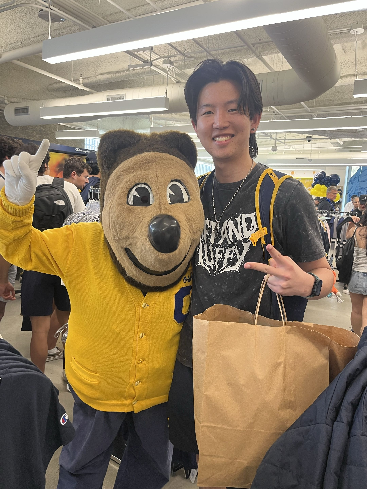

Portfolio Experience
A clean portfolio site with a polished dashboard feel and fast navigation.
My Personal Journey


Teams and fans alike are seeing a massive shift in how we understand human performance. An explosion of biometric wearables, live computer vision, and granular game-tracked data hasn't just changed how we watch sports; it is actively reshaping front-office strategies, athletic recovery, and how fans experience the game. As someone in love with this field, I don't believe technology will ever replace human intuition or reduce a player to a statistic. Rather, I see these data tools as a support system to protect and elevate athletic performance.
My foundation is rooted in the Data Science program at UC Berkeley, where I take rigorous classes such as Machine Learning (CS 189) and Probability (Data 140). These classes didn't just teach me barebones Python libraries or standard linear models; they trained me in the math and data intuition needed to understand complex mechanics in predictive modeling and analysis.
My core goals lie beyond the data and focus on supporting the athletes themselves. Often, the sports analytics industry becomes tunnel-visioned on front-office economics, draft capital, and betting lines, treating players as shipped goods. My goal is to influence this shift in data to protect and prolong careers. Based on my background in sports and data science, I want to build models and technology that give players agency over their own health and longevity, so they can perform at their peak while withstanding the extreme physicality of sports.
My passion didn't simply start with models or software. It's rooted from my experiences as a student volunteer at Sonoma State's Seawolf Fit. Working in their adaptive exercise program, I saw firsthand how personalized movement programs could positively change a person's life. I was able to part in the process of someone gaining a sense of agency and empowermentover their own body. Through volunteer research, I realized that data can be a powerful tool for supporting individuals and creating positive change.
Outside the classroom, my life still revolves around the culture of sports, gaming, and creativity. Whether it's coaching youth camps, watching basketball highlights, or designing digital assets for games, I love being a part of impactful creative projects and connecting with people who share that same love of the game.
Selected builds with a performance focus.
A clean portfolio site with a polished dashboard feel and fast navigation.
A dynamic app UI built for quick workflows and modern mobile styling.
An interactive dashboard with bold metrics and streamlined usability.
Roles where I delivered digital growth and polish.
Led product builds and design systems for performance-focused digital experiences.
Delivered modern landing pages, MVPs, and app interfaces for startups and creative teams.